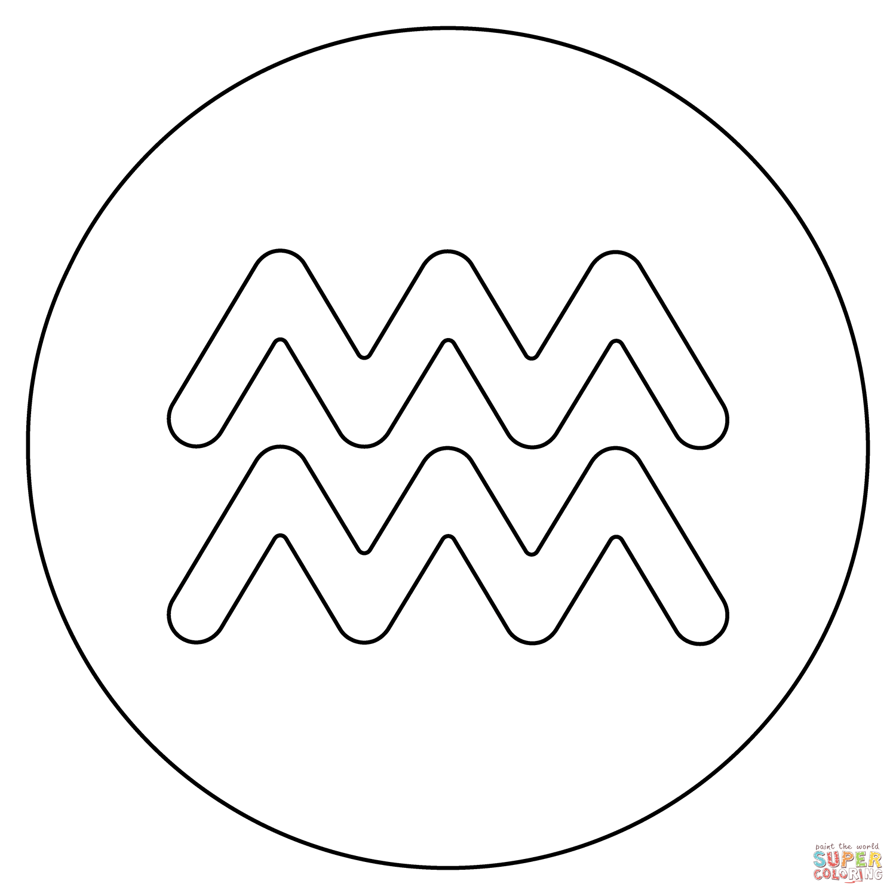

Urbizagastegui Fernández, Keneth

Summary
Driven and detail-oriented 7th-cycle Electronic Engineering student with a strong foundation in embedded
systems, analog/digital circuit design, and microcontroller programming. Proven ability to apply theoretical
knowledge to practical projects, using tools like MATLAB, LTspice, and KiCad. Eager to leverage skills in a
challenging role focused on hardware development and innovation.
Education
- Electronic Engineering, Universidad de Ingeniería y Tecnología (UTEC) (2022 - Present)
Skills
Technical Skills
- C, C++, Python, MATLAB, VHDL
- PCB Design, Analog & Digital Circuits, Power Electronics
- Microcontrollers (Arduino, STM32, ESP32), FPGA
Soft Skills
- Experience collaborating on group projects to achieve common goals.
- Strong ability to identify and troubleshoot issues in circuits and systems.
- Fast learner, capable of mastering new technologies and tools as needed.
Other